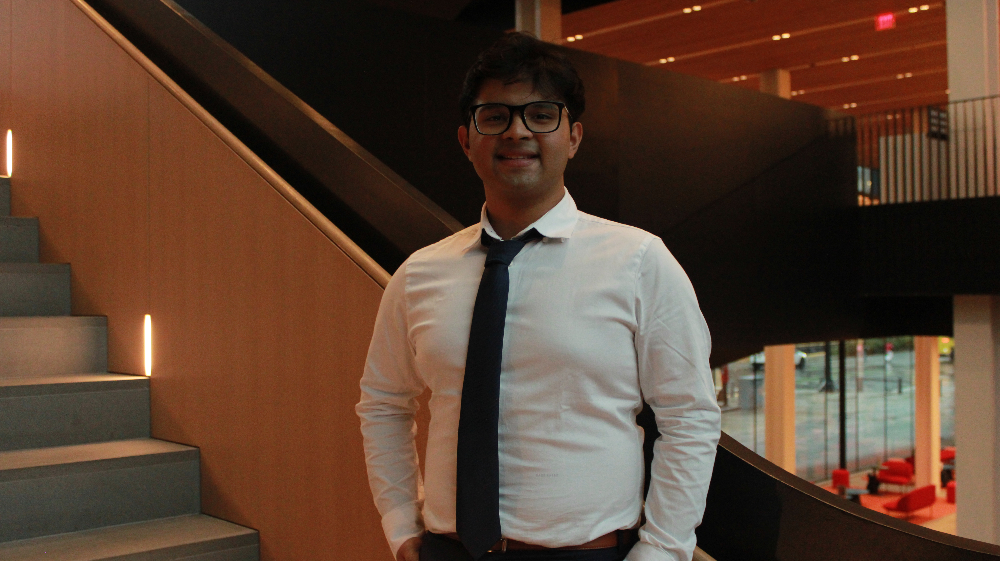

Hi! My name is Shreyas Lenkala, and I am an undergraduate student at Northeastern University studying Cellular and Molecular Biology with a minor in Data Science. I am interested in pursuing a career in medicine and learning how scientific research can improve patient care.
My academic interests include biology, medicine, and computational approaches to understanding healthcare. Throughout my time at Northeastern, I have had opportunities to explore scientific research and develop skills in data analysis and programming. These experiences have helped me understand how technology and research can contribute to solving important problems in medicine.
One of my research interests is cardiovascular disease. I have worked with clinical data related to cardiac conditions and have learned about the importance of organizing and analyzing patient information. Through these experiences, I have developed a greater appreciation for how research can help physicians understand diseases and improve medical decision-making.
I am also interested in healthcare access and public health. I believe it is important to understand differences in health outcomes between communities and investigate factors that contribute to these differences. Data visualization can make these patterns easier to understand and communicate.
Outside of my academic interests, I enjoy working with other students, teaching, and learning new technical skills. My data science courses have introduced me to programming, data cleaning, statistical analysis, and visualization. These skills have helped me approach problems from different perspectives.
I created this website for my Data Visualization course, DS4200. The website introduces my background, academic interests, and projects while demonstrating what I have learned about HTML, CSS, and D3.
GitHub: My GitHub
Email: Contact Me